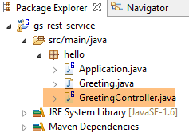
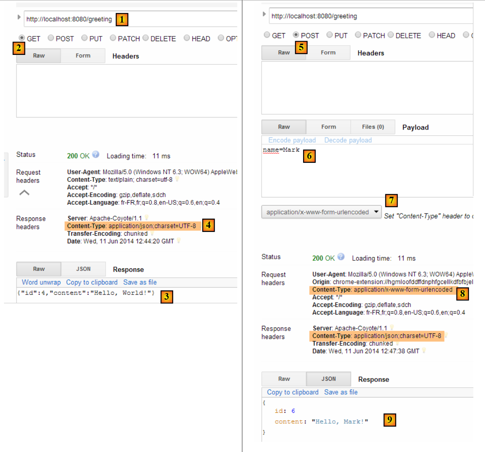
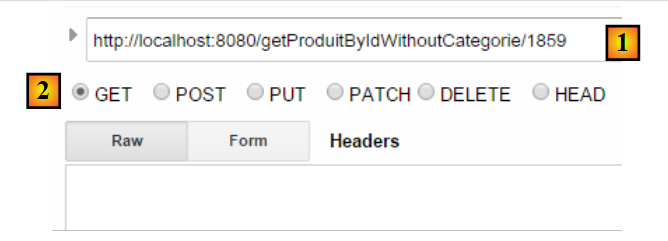
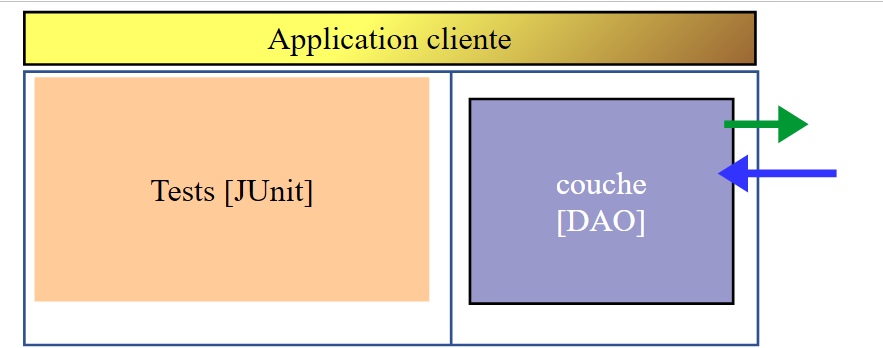

13. [Cours] : Exposer une base de données sur le web avec Spring MVC
Mots clés : architecture multicouche, Spring, injection de dépendances, service web / jSON, client / serveur
13.1. Support
 |  |
Les projets de ce chapitre seront trouvés dans le dossier [support / chap-13]. Le script SQL [dbintrospringdata.sql] permet de créer la base MySQL nécessaire aux tests.
13.2. La place de Spring MVC dans une application Web
Situons Spring MVC dans le développement d'une application Web. Le plus souvent, celle-ci sera bâtie sur une architecture multicouche telle que la suivante :
 |
- la couche [Web] est la couche en contact avec l'utilisateur de l'application Web. Celui-ci interagit avec l'application Web au travers de pages Web visualisées par un navigateur. C'est dans cette couche que se situe Spring MVC et uniquement dans cette couche ;
- la couche [métier] implémente les règles de gestion de l'application, tels que le calcul d'un salaire ou d'une facture. Cette couche utilise des données provenant de l'utilisateur via la couche [Web] et du SGBD via la couche [DAO] ;
- la couche [DAO] (Data Access Objects), la couche [ORM] (Object Relational Mapper) et le pilote JDBC gèrent l'accès aux données du SGBD. La couche [ORM] fait un pont entre les objets manipulés par la couche [DAO] et les lignes et les colonnes des tables d'une base de données relationnelle. La spécification JPA (Java Persistence API) permet de s'abstraire de l'ORM utilisé si celui-ci implémente ces spécifications. Ce sera le cas ici et nous appellerons désormais la couche ORM, la couche JPA ;
- l'intégration des couches est faite par le framework Spring ;
13.3. Le modèle de développement de Spring MVC
Spring MVC implémente le modèle d'architecture dit MVC (Modèle – Vue – Contrôleur) de la façon suivante :
 |
Le traitement d'une demande d'un client se déroule de la façon suivante :
- demande - les URL demandées sont de la forme http://machine:port/contexte/Action/param1/param2/....?p1=v1&p2=v2&... Le [Front Controller] utilise un fichier de configuration ou des annotations Java pour " router " la demande vers le bon contrôleur et la bonne action au sein de ce contrôleur. Pour cela, il utilise le champ [Action] de l'URL. Le reste de l'URL [/param1/param2/...] est formé de paramètres facultatifs qui seront transmis à l'action. Le C de MVC est ici la chaîne [Front Controller, Contrôleur, Action]. Si aucun contrôleur ne peut traiter l'action demandée, le serveur Web répondra que l'URL demandée n'a pas été trouvée.
- traitement
- l'action choisie peut exploiter les paramètres parami que le [Front Controller] lui a transmis. Ceux-ci peuvent provenir de plusieurs sources :
- du chemin [/param1/param2/...] de l'URL,
- des paramètres [p1=v1&p2=v2] de l'URL,
- de paramètres postés par le navigateur avec sa demande ;
- dans le traitement de la demande de l'utilisateur, l'action peut avoir besoin de la couche [métier] [2b]. Une fois la demande du client traitée, celle-ci peut appeler diverses réponses. Un exemple classique est :
- une page d'erreur si la demande n'a pu être traitée correctement
- une page de confirmation sinon
- l'action demande à une certaine vue de s'afficher [3]. Cette vue va afficher des données qu'on appelle le modèle de la vue. C'est le M de MVC. L'action va créer ce modèle M [2c] et demander à une vue V de s'afficher [3] ;
- réponse - la vue V choisie utilise le modèle M construit par l'action pour initialiser les parties dynamiques de la réponse HTML qu'elle doit envoyer au client puis envoie cette réponse.
Pour un service web / jSON, l'architecture précédente est légèrement modifiée :
 |
- en [4a], le modèle qui est une classe Java est transformé en chaîne jSON par une bibliothèque jSON ;
- en [4b], cette chaîne jSON est envoyée au navigateur ;
Maintenant, précisons le lien entre architecture web MVC et architecture en couches. Selon la définition qu'on donne au modèle, ces deux concepts sont liés ou non. Prenons une application web Spring MVC à une couche :
 |
Si nous implémentons la couche [Web] avec Spring MVC, nous aurons bien une architecture web MVC mais pas une architecture multicouche. Ici, la couche [web] s'occupera de tout : présentation, métier, accès aux données. Ce sont les actions qui feront ce travail.
Maintenant, considérons une architecture Web multicouche :
 |
La couche [Web] peut être implémentée sans framework et sans suivre le modèle MVC. On a bien alors une architecture multicouche mais la couche Web n'implémente pas le modèle MVC.
Par exemple, dans le monde .NET la couche [Web] ci-dessus peut être implémentée avec ASP.NET MVC et on a alors une architecture en couches avec une couche [Web] de type MVC. Ceci fait, on peut remplacer cette couche ASP.NET MVC par une couche ASP.NET classique (WebForms) tout en gardant le reste (métier, DAO, ORM) à l'identique. On a alors une architecture en couches avec une couche [Web] qui n'est plus de type MVC.
Dans MVC, nous avons dit que le modèle M était celui de la vue V, c.a.d. l'ensemble des données affichées par la vue V. Une autre définition du modèle M de MVC est donnée :
 |
Beaucoup d'auteurs considèrent que ce qui est à droite de la couche [Web] forme le modèle M du MVC. Pour éviter les ambigüités on peut parler :
- du modèle du domaine lorsqu'on désigne tout ce qui est à droite de la couche [Web]
- du modèle de la vue lorsqu'on désigne les données affichées par une vue V
Dans la suite, le terme " modèle M " désignera exclusivement le modèle d'une vue V.
13.4. Un projet web / jSON avec Spring MVC
Le site [http://spring.io/guides] offre des tutoriels de démarrage pour découvrir l'écosystème Spring. Nous allons suivre l'un d'eux pour découvrir la configuration Maven nécessaire à un projet Spring MVC.
13.4.1. Le projet de démonstration
 |
- en [1], nous importons l'un des guides Spring ;
 |
- en [2], nous choisissons l'exemple [Rest Service] ;
- en [3], on choisit le projet Maven ;
- en [4], on prend la version finale du guide ;
- en [5], on valide ;
- en [6], le projet importé ;
Les services web accessibles via des URL standard et qui délivrent du texte jSON sont souvent appelés des services REST (REpresentational State Transfer). Un service est dit Restful s'il respecte certaines règles.
Examinons maintenant le projet importé, d'abord sa configuration Maven.
13.4.2. Configuration Maven
Le fichier [pom.xml] est le suivant :
<?xml version="1.0" encoding="UTF-8"?>
<project xmlns="http://maven.apache.org/POM/4.0.0" xmlns:xsi="http://www.w3.org/2001/XMLSchema-instance"
xsi:schemaLocation="http://maven.apache.org/POM/4.0.0 http://maven.apache.org/xsd/maven-4.0.0.xsd">
<modelVersion>4.0.0</modelVersion>
<groupId>org.springframework</groupId>
<artifactId>gs-rest-service</artifactId>
<version>0.1.0</version>
<parent>
<groupId>org.springframework.boot</groupId>
<artifactId>spring-boot-starter-parent</artifactId>
<version>1.2.2.RELEASE</version>
</parent>
<dependencies>
<dependency>
<groupId>org.springframework.boot</groupId>
<artifactId>spring-boot-starter-web</artifactId>
</dependency>
</dependencies>
<properties>
<start-class>hello.Application</start-class>
</properties>
<build>
<plugins>
<plugin>
<groupId>org.springframework.boot</groupId>
<artifactId>spring-boot-maven-plugin</artifactId>
</plugin>
</plugins>
</build>
<repositories>
<repository>
<id>spring-releases</id>
<url>https://repo.spring.io/libs-release</url>
</repository>
</repositories>
<pluginRepositories>
<pluginRepository>
<id>spring-releases</id>
<url>https://repo.spring.io/libs-release</url>
</pluginRepository>
</pluginRepositories>
</project>
- lignes 6-8 : les propriétés du projet Maven. Manque une balise [<packaging>] indiquant le type du fichier produit par la compilation Maven. En l'absence de celle-ci, c'est le type [jar] qui est utilisé. L'application est donc une application exécutable de type console, et non une application web où le packaging serait alors [war] ;
- lignes 10-14 : le projet Maven a un projet parent [spring-boot-starter-parent]. C'est lui qui définit l'essentiel des dépendances du projet. Elles peuvent être suffisantes, auquel cas on n'en rajoute pas, ou pas, auquel cas on rajoute les dépendances manquantes ;
- lignes 17-20 : l'artifact [spring-boot-starter-web] amène avec lui les bibliothèques nécessaires à un projet Spring MVC de type service web où il n'y a pas de vues générées. Cet artifact amène avec lui un très grand nombre de bibliothèques dont celles d'un serveur Tomcat embarqué. C'est sur ce serveur que l'application sera exécutée ;
Les bibliothèques amenées par cette configuration sont très nombreuses :
 |  |
Ci-dessus on voit les trois archives du serveur Tomcat.
13.4.3. L'architecture d'un service Spring [web / jSON]
Pour un service web / jSON, Spring MVC implémente le modèle MVC de la façon suivante :
 |
- en [4a], le modèle qui est une classe Java est transformé en chaîne jSON par une bibliothèque jSON ;
- en [4b], cette chaîne jSON est envoyée au navigateur ;
13.4.4. Le contrôleur C
 |
L'application importée a le contrôleur suivant :
package hello;
import java.util.concurrent.atomic.AtomicLong;
import org.springframework.web.bind.annotation.RequestMapping;
import org.springframework.web.bind.annotation.RequestParam;
import org.springframework.web.bind.annotation.RestController;
@RestController
public class GreetingController {
private static final String template = "Hello, %s!";
private final AtomicLong counter = new AtomicLong();
@RequestMapping("/greeting")
public Greeting greeting(@RequestParam(value = "name", defaultValue = "World") String name) {
return new Greeting(counter.incrementAndGet(), String.format(template, name));
}
}
- ligne 9 : l'annotation [@RestController] fait de la classe [GreetingController] un contrôleur Spring, ç-à-d que ses méthodes sont enregistrées pour traiter des URL. Nous avons vu l'annotation similaire [@Controller]. Le résultat des méthodes de ce contrôleur était un type [String] qui était le nom de la vue à afficher. Ici c'est différent. Les méthodes d'un contrôleur de type [@RestController] rendent des objets qui sont sérialisés pour être envoyés au navigateur. Le type de sérialisation opérée dépend de la configuration de Spring MVC. Ici, ils seront sérialisés en jSON. C'est la présence d'une bibliothèque jSON dans les dépendances du projet qui fait que Spring Boot va, par autoconfiguration, configurer le projet de cette façon ;
- ligne 14 : l'annotation [@RequestMapping] indique l'URL que traite la méthode, ici l'URL [/greeting] ;
- ligne 15 : nous avons déjà expliqué l'annotation [@RequestParam]. Le résultat rendu par la méthode est un objet de type [Greeting].
- ligne 12 : un entier long de type atomique. Cela signifie qu'il supporte la concurrence d'accès. Plusieurs threads peuvent vouloir incrémenter la variable [counter] en même temps. Cela se fera proprement. Un thread ne peut lire la valeur du compteur que si le thread en train de le modifier a terminé sa modification.
13.4.5. Le modèle M
Le modèle M produit par la méthode précédente est l'objet [Greeting] suivant :
 |
package hello;
public class Greeting {
private final long id;
private final String content;
public Greeting(long id, String content) {
this.id = id;
this.content = content;
}
public long getId() {
return id;
}
public String getContent() {
return content;
}
}
La transformation jSON de cet objet créera la chaîne de caractères {"id":n,"content":"texte"}. Au final, la chaîne jSON produite par la méthode du contrôleur sera de la forme :
ou
13.4.6. Exécution
 |
La classe [Application.java] est la classe exécutable du projet. Son code est le suivant :
package hello;
import org.springframework.boot.autoconfigure.EnableAutoConfiguration;
import org.springframework.boot.SpringApplication;
import org.springframework.context.annotation.ComponentScan;
@ComponentScan
@EnableAutoConfiguration
public class Application {
public static void main(String[] args) {
SpringApplication.run(Application.class, args);
}
}
Nous avons déjà rencontré et expliqué ce code dans l'exemple précédent.
13.4.7. Exécution du projet
 |
On obtient les logs console suivants :
- ligne 13 : le serveur Tomcat démarre sur le port 8080 (ligne 12) ;
- ligne 17 : la servlet [DispatcherServlet] est présente ;
- ligne 20 : la méthode [GreetingController.greeting] a été découverte ;
Pour tester l'application web, on demande l'URL [http://localhost:8080/greeting] :
 |  |
On reçoit bien la chaîne jSON attendue. Il peut être intéressant de voir les entêtes HTTP envoyés par le serveur. Pour cela, on va utiliser l'extension de Chrome appelée [Advanced Rest Client] (Chrome / Ctrl-T / Menu [Applications] / [Advanced Rest Client] - cf Annexes paragraphe 22.5) :
 |
- en [1], l'URL demandée ;
- en [2], la méthode GET est utilisée ;
- en [3], la réponse jSON ;
- en [4], le serveur a indiqué qu'il envoyait une réponse au format jSON ;
- en [5], on demande la même URL mais cette fois-ci avec un POST ;
- en [7], les informations sont envoyées au serveur sous la forme [urlencoded] ;
- en [6], le paramètre name avec sa valeur ;
- en [8], le navigateur indique au serveur qu'il lui envoie des informations [urlencoded] ;
- en [9], la réponse jSON du serveur ;
13.4.8. Création d'une archive exécutable
Nous créons maintenant une archive exécutable :
 |
 |
- en [1] : on exécute une cible Maven ;
- en [2] : il y a deux cibles (goals) : [clean] pour supprimer le dossier [target] du projet Maven, [package] pour le régénérer ;
- en [3] : le dossier [target] généré, le sera dans ce dossier ;
- en [4] : on génère la cible ;
Dans les logs qui apparaissent dans la console, il est important de voir apparaître le plugin [spring-boot-maven-plugin]. C'est lui qui génère l'archive exécutable.
Avec une console, on se place dans le dossier généré :
D:\Temp\wksSTS\gs-rest-service\target>dir
...
11/06/2014 15:30 <DIR> classes
11/06/2014 15:30 <DIR> generated-sources
11/06/2014 15:30 11 073 572 gs-rest-service-0.1.0.jar
11/06/2014 15:30 3 690 gs-rest-service-0.1.0.jar.original
11/06/2014 15:30 <DIR> maven-archiver
11/06/2014 15:30 <DIR> maven-status
...
- ligne 5 : l'archive générée ;
Cette archive est exécutée de la façon suivante :
D:\Temp\wksSTS\gs-rest-service-complete\target>java -jar gs-rest-service-0.1.0.jar
. ____ _ __ _ _
/\\ / ___'_ __ _ _(_)_ __ __ _ \ \ \ \
( ( )\___ | '_ | '_| | '_ \/ _` | \ \ \ \
\\/ ___)| |_)| | | | | || (_| | ) ) ) )
' |____| .__|_| |_|_| |_\__, | / / / /
=========|_|==============|___/=/_/_/_/
:: Spring Boot :: (v1.1.0.RELEASE)
2014-06-11 15:32:47.088 INFO 4972 --- [ main] hello.Application
: Starting Application on Gportpers3 with PID 4972 (D:\Temp\wk
sSTS\gs-rest-service-complete\target\gs-rest-service-0.1.0.jar started by ST in
D:\Temp\wksSTS\gs-rest-service-complete\target)
...
Maintenant que l'application web est lancée, on peut l'interroger avec un navigateur :
 |
13.4.9. Déployer l'application sur un serveur Tomcat
Comme il a été fait pour le projet précédent, nous modifions le fichier [pom.xml] de la façon suivante :
<?xml version="1.0" encoding="UTF-8"?>
<project xmlns="http://maven.apache.org/POM/4.0.0" xmlns:xsi="http://www.w3.org/2001/XMLSchema-instance"
xsi:schemaLocation="http://maven.apache.org/POM/4.0.0 http://maven.apache.org/xsd/maven-4.0.0.xsd">
<modelVersion>4.0.0</modelVersion>
<groupId>org.springframework</groupId>
<artifactId>gs-rest-service</artifactId>
<version>0.1.0</version>
<packaging>war</packaging>
...
</project>
- ligne 9 : il faut indiquer qu'on va générer une archive war (Web ARchive) ;
Il faut par ailleurs configurer l'application web. En l'absence de fichier [web.xml], cela se fait avec une classe héritant de [SpringBootServletInitializer] :
 |
La classe [ApplicationInitializer] est la suivante :
package hello;
import org.springframework.boot.builder.SpringApplicationBuilder;
import org.springframework.boot.context.web.SpringBootServletInitializer;
public class ApplicationInitializer extends SpringBootServletInitializer {
@Override
protected SpringApplicationBuilder configure(SpringApplicationBuilder application) {
return application.sources(Application.class);
}
}
- ligne 6 : la classe [ApplicationInitializer] étend la classe [SpringBootServletInitializer] ;
- ligne 9 : la méthode [configure] est redéfinie (ligne 8) ;
- ligne 10 : on fournit la classe qui configure le projet ;
Pour exécuter le projet, on peut procéder ainsi :
 |
- en [1-2], on exécute le projet sur l'un des serveurs enregistrés dans l'IDE Eclipse ;
Ceci fait, on peut demander l'URL [http://localhost:8080/gs-rest-service/greeting/?name=Mitchell] dans un navigateur :
 |
13.4.10. Conclusion
Nous avons introduit un type de projets Spring MVC où l'application web envoie un flux jSON au navigateur. Nous allons développer maintenant une application web / jSON pour exposer sur le web la base [dbintrospringdata] étudiée dans le tutoriel [Introduction à Spring Data].
13.5. Exposer la base [dbintrospringdata] sur le web
13.5.1. Architecture du service web / jSON
Nous allons mettre en place l'architecture suivante :
 |
Les couches [DAO] et [JPA] sont implémentées par l'application écrite dans le tutoriel [Introduction à Spring Data].
13.5.2. Installation de la base de données
 |
Le script SQL [dbintrospringdata.sql] permet de créer la base MySQL nécessaire aux tests.
13.5.3. Le projet Eclipse du service web / jSON
Le projet Eclipse du service web / jSON est le suivant :
 |
C'est un projet Maven dont le fichier [pom.xml] est le suivant :
<project xmlns="http://maven.apache.org/POM/4.0.0" xmlns:xsi="http://www.w3.org/2001/XMLSchema-instance"
xsi:schemaLocation="http://maven.apache.org/POM/4.0.0 http://maven.apache.org/xsd/maven-4.0.0.xsd">
<modelVersion>4.0.0</modelVersion>
<groupId>istia.st.webjson</groupId>
<artifactId>intro-server-webjson01</artifactId>
<version>0.0.1-SNAPSHOT</version>
<name>intro-server-webjson01</name>
<description>démo spring mvc</description>
<parent>
<groupId>org.springframework.boot</groupId>
<artifactId>spring-boot-starter-parent</artifactId>
<version>1.2.7.RELEASE</version>
</parent>
<dependencies>
<dependency>
<groupId>istia.st.springdata</groupId>
<artifactId>intro-spring-data-01</artifactId>
<version>0.0.1-SNAPSHOT</version>
</dependency>
<dependency>
<groupId>org.springframework.boot</groupId>
<artifactId>spring-boot-starter-web</artifactId>
</dependency>
<dependency>
<groupId>org.springframework.boot</groupId>
<artifactId>spring-boot-starter</artifactId>
</dependency>
</dependencies>
<build>
<plugins>
<plugin>
<groupId>org.springframework.boot</groupId>
<artifactId>spring-boot-maven-plugin</artifactId>
</plugin>
<plugin>
<groupId>org.apache.maven.plugins</groupId>
<artifactId>maven-surefire-plugin</artifactId>
<version>2.18.1</version>
</plugin>
</plugins>
</build>
</project>
- lignes 11-15 : le projet Maven parent déjà utilisé pour la couche [DAO] ;
- lignes 18-22 : la dépendance sur la couche [DAO] ;
- lignes 23-26 : la dépendance sur l'artifact [spring-boot-starter-web]. Cet artifact amène avec lui toutes les dépendances nécessaires à la création d'un service web / jSON. Il amène aussi des bibliothèques inutiles. Une configuration plus précise serait donc nécessaire. Mais cette configuration est pratique pour démarrer ;
- lignes 28-30 : la dépendance sur l'artifact [spring-boot-starter] permet de gérer les annotation Spring Boot ;
Les dépendances amenées par cette configuration sont les suivantes :
 |
- en [1], on voit qu'Eclipse a vu la dépendance sur l'archive du projet [intro-spring-data-01] ;
Les dépendances ci-dessus sont à la fois celles de la couche [DAO] et de la couche [web].
13.5.3.1. Configuration de la couche [web]
La couche [web] est configurée par un fichier [AppConfig] :
 |
La classe [WebConfig] configure la couche [web] :
package spring.webjson.config;
import org.springframework.beans.factory.annotation.Autowired;
import org.springframework.boot.context.embedded.EmbeddedServletContainerFactory;
import org.springframework.boot.context.embedded.ServletRegistrationBean;
import org.springframework.boot.context.embedded.tomcat.TomcatEmbeddedServletContainerFactory;
import org.springframework.context.ApplicationContext;
import org.springframework.context.annotation.Bean;
import org.springframework.web.context.WebApplicationContext;
import org.springframework.web.servlet.DispatcherServlet;
import org.springframework.web.servlet.config.annotation.EnableWebMvc;
import org.springframework.web.servlet.config.annotation.WebMvcConfigurerAdapter;
import com.fasterxml.jackson.databind.ObjectMapper;
import com.fasterxml.jackson.databind.ser.impl.SimpleBeanPropertyFilter;
import com.fasterxml.jackson.databind.ser.impl.SimpleFilterProvider;
@EnableWebMvc
public class WebConfig extends WebMvcConfigurerAdapter {
// -------------------------------- configuration couche [web]
@Autowired
private ApplicationContext context;
@Bean
public DispatcherServlet dispatcherServlet() {
DispatcherServlet servlet = new DispatcherServlet((WebApplicationContext) context);
return servlet;
}
@Bean
public ServletRegistrationBean servletRegistrationBean(DispatcherServlet dispatcherServlet) {
return new ServletRegistrationBean(dispatcherServlet, "/*");
}
@Bean
public EmbeddedServletContainerFactory embeddedServletContainerFactory() {
return new TomcatEmbeddedServletContainerFactory("", 8080);
}
// filtres jSON
@Bean(name = "jsonMapper")
public ObjectMapper jsonMapper() {
return new ObjectMapper();
}
@Bean(name = "jsonMapperCategorieWithProduits")
public ObjectMapper jsonMapperCategorieWithProduits() {
// mappeur jSON
ObjectMapper mapper = new ObjectMapper();
// filtres
mapper.setFilters(
new SimpleFilterProvider().addFilter("jsonFilterCategorie", SimpleBeanPropertyFilter.serializeAllExcept())
.addFilter("jsonFilterProduit", SimpleBeanPropertyFilter.serializeAllExcept("categorie")));
// résultat
return mapper;
}
@Bean(name = "jsonMapperProduitWithCategorie")
public ObjectMapper jsonMapperProduitWithCategorie() {
// mappeur jSON
ObjectMapper mapper = new ObjectMapper();
// filtres
mapper.setFilters(
new SimpleFilterProvider().addFilter("jsonFilterProduit", SimpleBeanPropertyFilter.serializeAllExcept())
.addFilter("jsonFilterCategorie", SimpleBeanPropertyFilter.serializeAllExcept("produits")));
// résultat
return mapper;
}
@Bean(name = "jsonMapperCategorieWithoutProduits")
public ObjectMapper jsonMapperCategorieWithoutProduits() {
// mappeur jSON
ObjectMapper mapper = new ObjectMapper();
// filtres
mapper.setFilters(new SimpleFilterProvider().addFilter("jsonFilterCategorie",
SimpleBeanPropertyFilter.serializeAllExcept("produits")));
// résultat
return mapper;
}
@Bean(name = "jsonMapperProduitWithoutCategorie")
public ObjectMapper jsonMapperProduitWithoutCategorie() {
// mappeur jSON
ObjectMapper mapper = new ObjectMapper();
// filtres
mapper.setFilters(new SimpleFilterProvider().addFilter("jsonFilterProduit",
SimpleBeanPropertyFilter.serializeAllExcept("categorie")));
// résultat
return mapper;
}
}
- ligne 18 : l'annotation [@EnableWebMvc] induit des configurations automatiques pour le framework Spring MVC ;
- ligne 19 : la classe [WebConfig] étend la classe Spring [WebMvcConfigurerAdapter] pour en redéfinir certains beans (lignes 26-40) ;
- lignes 22-23 : injection du contexte Spring ;
- lignes 25-29 : définition de la servlet du framework Spring MVC, celle qui route les requêtes HTTP vers le bon contrôleur et la bonne méthode. [DispatcherServlet] est une classe de Spring ;
- lignes 31-34 : on indique que cette servlet traite toutes les URL ;
- lignes 36-39 : c'est la présence de ce bean qui va activer le serveur Tomcat présent dans les archives du projet. Il attendra les requêtes sur le port 8080 ;
- lignes 42-91 : des beans qui seront utilisés pour gérer des filtres jSON ;
- lignes 42-45 : un mappeur jSON sans filtres ;
- lignes 47-57 : le mappeur jSON qui permet d'avoir une catégorie avec ses produits. On notera que lorsqu'on demande une catégorie avec ses produits, il faut à la fois configurer le filtre jSON de la classe [Categorie] et celui de la classe [Produit]. Il en est toujours ainsi. Lorsqu'on sérialise / désérialise une classe en jSON, il faut configurer le filtre jSON de la classe et ceux de toutes les dépendances à inclure dans celle-ci ;
- lignes 59-69 : le mappeur jSON qui permet d'avoir un produit avec sa catégorie ;
- lignes 71-80 : le mappeur jSON qui permet d'avoir une catégorie sans ses produits ;
- lignes 82-91 : le mappeur jSON qui permet d'avoir un produit sans sa catégorie ;
La classe [AppConfig] configure l'ensemble de l'application, ç-à-d les couches [web] et [DAO] :
package spring.webjson.config;
import org.springframework.context.annotation.ComponentScan;
import org.springframework.context.annotation.Import;
import spring.data.config.DaoConfig;
@ComponentScan(basePackages = { "spring.webjson" })
@Import({ DaoConfig.class, WebConfig.class})
public class AppConfig {
}
- ligne 9 : on importe les beans de la couche [DAO] et ceux de la couche [web] ;
- ligne 8 : indique dans quels packages trouver d'autres beans Spring ;
On notera que nulle part, nous n'avons utilisé l'annotation [@EnableAutoConfiguration]. Nous avons préféré contrôler la configuration nous-mêmes.
13.5.4. Le modèle de l'application
 |
La classe [ApplicationModel] est la suivante :
package spring.webjson.models;
import java.util.List;
import org.springframework.beans.factory.annotation.Autowired;
import org.springframework.stereotype.Component;
import spring.data.dao.IDao;
import spring.data.entities.Categorie;
import spring.data.entities.Produit;
@Component
public class ApplicationModel implements IDao {
// la couche [DAO]
@Autowired
private IDao dao;
@Override
public void addProduits(List<Produit> produits) {
dao.addProduits(produits);
}
@Override
public void deleteAllProduits() {
dao.deleteAllProduits();
}
@Override
public void updateProduits(List<Produit> produits) {
dao.updateProduits(produits);
}
@Override
public List<Produit> getAllProduits() {
return dao.getAllProduits();
}
@Override
public void addCategories(List<Categorie> categories) {
dao.addCategories(categories);
}
@Override
public void deleteAllCategories() {
dao.deleteAllCategories();
}
@Override
public void updateCategories(List<Categorie> categories) {
dao.updateCategories(categories);
}
@Override
public List<Categorie> getAllCategories() {
return dao.getAllCategories();
}
@Override
public Produit getProduitByIdWithCategorie(Long idProduit) {
return dao.getProduitByIdWithCategorie(idProduit);
}
@Override
public Produit getProduitByNameWithCategorie(String nom) {
return dao.getProduitByNameWithCategorie(nom);
}
@Override
public Categorie getCategorieByIdWithProduits(Long idCategorie) {
return dao.getCategorieByIdWithProduits(idCategorie);
}
@Override
public Categorie getCategorieByNameWithProduits(String nom) {
return dao.getCategorieByNameWithProduits(nom);
}
@Override
public Produit getProduitByIdWithoutCategorie(Long idProduit) {
return dao.getProduitByIdWithoutCategorie(idProduit);
}
@Override
public Categorie getCategorieByIdWithoutProduits(Long idCategorie) {
return dao.getCategorieByIdWithoutProduits(idCategorie);
}
@Override
public Produit getProduitByNameWithoutCategorie(String nom) {
return dao.getProduitByNameWithoutCategorie(nom);
}
@Override
public Categorie getCategorieByNameWithoutProduits(String nom) {
return dao.getCategorieByNameWithoutProduits(nom);
}
}
- ligne 12 : la classe est un singleton Spring ;
- ligne 13 : qui implémente l'interface [IDao] de la couche [DAO] ;
- lignes 16-17 : injection d'une référence sur la couche [DAO] ;
- lignes 19-99 : implémentation de l'interface [IDao] ;
L'architecture de la couche web évolue comme suit :
 |
- en [2b], les méthodes du ou des contrôleurs communiquent avec le singleton [ApplicationModel] ;
Cette stratégie amène de la souplesse quant à la gestion d'un éventuel cache. La classe [ApplicationModel] peut servir à mémoriser des informations obtenues auprès de la couche [DAO] ou encore des données de configuration. Cela peut être utile lorsqu'on n'a pas la maîtrise de la couche [DAO]. Cette stratégie de cache peut évoluer au fil du temps. Les modifications n'auront aucun impact sur le code du ou des contrôleurs.
13.5.5. Le contrôleur
 |
 |
Nous n'avons ici qu'un contrôleur, la classe [MyController].
13.5.5.1. Les URL exposées
Les URL exposées par ce contrôleur sont les suivantes :
| Ajoute des produits dans la base. Ceux-ci sont postés. La réponse est la chaîne jSON la liste des produits ajoutés avec leur clé primaire. |
| Supprime tous les produits de la base. |
| Met à jour des produits dans la base. Ceux-ci sont postés. La réponse est chaîne jSON de la liste des produits mis à jour. |
| Obtient la chaîne jSON de tous les produits. |
| Ajoute des catégories dans la base. Ceux-ci sont postés. La réponse est la chaîne jSON de la liste des catégories ajoutées avec leur clé primaire. Si les catégories contiennent des produits, ceux-ci sont également ajoutés à la base. |
| Supprime toutes les catégories de la base ainsi que tous les produits de celles-ci. Après la base est vide. |
| Met à jour des catégories dans la base. Ceux-ci sont postés. La réponse est la liste des catégories mises à jour. Si les catégories contiennent des produits, ceux-ci sont également mis à jour dans la base. Rend la chaîne jSON des catégories modifiées ; |
| Obtient la chaîne jSON de toutes les catégories. |
| Obtient la chaîne jSON d'un produit désigné par son id, avec sa catégorie. |
| Obtient la chaîne jSON d'un produit désigné par son id, sans sa catégorie. |
| Obtient la chaîne jSON d'un produit désigné par son nom, avec sa catégorie. |
| Obtient la chaîne jSON d'un produit désigné par son nom, sans sa catégorie. |
| Obtient la chaîne jSON d'une catégorie désignée par son id, avec ses produits. |
| Obtient la chaîne jSON d'une catégorie désignée par son nom, avec ses produits. |
| Obtient la chaîne jSON d'une catégorie désignée par son nom, sans ses produits. |
| Obtient la chaîne jSON d'une catégorie désignée par son id sans ses produits. |
Les URL exposées correspondent aux méthodes de l'interface [IDao] de la couche [DAO]. Les méthodes du service web / jSON sont toutes bâties sur le même modèle. Nous allons en examiner quelques unes.
13.5.5.2. Le squelette du contrôleur
Le squelette du contrôleur est le suivant :
package spring.webjson.service;
import java.util.ArrayList;
import java.util.List;
import java.util.Set;
import javax.servlet.http.HttpServletRequest;
import org.springframework.beans.factory.annotation.Autowired;
import org.springframework.beans.factory.annotation.Qualifier;
import org.springframework.stereotype.Controller;
import org.springframework.web.bind.annotation.PathVariable;
import org.springframework.web.bind.annotation.RequestMapping;
import org.springframework.web.bind.annotation.RequestMethod;
import org.springframework.web.bind.annotation.ResponseBody;
import com.fasterxml.jackson.core.JsonProcessingException;
import com.fasterxml.jackson.core.type.TypeReference;
import com.fasterxml.jackson.databind.ObjectMapper;
import com.google.common.io.CharStreams;
import spring.data.dao.DaoException;
import spring.data.entities.Categorie;
import spring.data.entities.Produit;
import spring.webjson.models.ApplicationModel;
import spring.webjson.models.Response;
@Controller
public class MyController {
// dépendances Spring
@Autowired
private ApplicationModel application;
// filtres jSON
@Autowired
@Qualifier("jsonMapper")
private ObjectMapper jsonMapper;
@Autowired
@Qualifier("jsonMapperCategorieWithProduits")
private ObjectMapper jsonMapperCategorieWithProduits;
@Autowired
@Qualifier("jsonMapperProduitWithCategorie")
private ObjectMapper jsonMapperProduitWithCategorie;
@Autowired
@Qualifier("jsonMapperCategorieWithoutProduits")
private ObjectMapper jsonMapperCategorieWithoutProduits;
@Autowired
@Qualifier("jsonMapperProduitWithoutCategorie")
private ObjectMapper jsonMapperProduitWithoutCategorie;
// la classe [MyController] est un singleton et n'est instanciée qu'une fois le bean
public MyController() {
// System.out.println("MyController");
}
@RequestMapping(value = "/addProduits", method = RequestMethod.POST, consumes = "application/json; charset=UTF-8", produces = "application/json; charset=UTF-8")
@ResponseBody
public String addProduits(HttpServletRequest request) throws JsonProcessingException {
...
}
- ligne 28 : l'annotation [@Controller] fait de la classe un composant Spring ;
- lignes 32-33 : injection d'une référence sur la classe [ApplicationModel] ;
- lignes 36-50 : injections de références sur les mappeurs jSON ;
- ligne 58 : l'URL exposée est [/addProduits]. Le client doit utiliser une méthode [POST] pour faire sa requête (method = RequestMethod.POST). Il doit envoyer la valeur postée sous forme d'une chaîne jSON (consumes = "application/json; charset=UTF-8"). La méthode renvoie elle-même la réponse au client (ligne 59). Ce sera une chaîne de caractères (ligne 60). L'entête HTTP [Content-type : application/json; charset=UTF-8] sera envoyé au client pour lui indiquer qu'il va recevoir une chaîne jSON (ligne 58) ;
- ligne 60 : la méthode [addProduits] rend la chaîne jSON de la liste des produits ajoutés dans la base ;
13.5.5.3. La réponse des méthodes du contrôleur
Toutes les méthodes du contrôleur rendent la réponse de type [Response] suivant :
 |
package spring.webjson.service;
import java.util.List;
public class Response<T> {
// ----------------- propriétés
// statut de l'opération
private int status;
// les éventuels messages d'erreur
private List<String> messages;
// le corps de la réponse
private T body;
// constructeurs
public Response() {
}
public Response(int status, List<String> messages, T body) {
this.status = status;
this.messages = messages;
this.body = body;
}
// getters et setters
...
}
- ligne 5 : la réponse encapsule un type T ;
- ligne 13 : la réponse de type T ;
- lignes 9-11 : il est possible qu'une méthode rencontre une exception. Dans ce cas, elle rendra une réponse avec :
- ligne 9 : status!=0 ;
- ligne 11 : la liste des erreurs rencontrées ;
13.5.5.4. L'URL [/addProduits]
L'URL [/addProduits] est traitée par la méthode suivante :
@RequestMapping(value = "/addProduits", method = RequestMethod.POST, consumes = "application/json; charset=UTF-8", produces = "application/json; charset=UTF-8")
@ResponseBody
public String addProduits(HttpServletRequest request) throws JsonProcessingException {
// réponse
Response<List<Produit>> response;
try {
// on récupère la valeur postée
String body = CharStreams.toString(request.getReader());
List<Produit> produits = jsonMapperProduitWithoutCategorie.readValue(body, new TypeReference<List<Produit>>() {
});
// on rétablit le lien entre produits et catégories
for (Produit produit : produits) {
produit.setCategorie(application.getCategorieByIdWithoutProduits(produit.getIdCategorie()));
}
// on persiste les produits
application.addProduits(produits);
response = new Respon se<List<Produit>>(0, null, produits);
} catch (DaoException e1) {
response = new Response<List<Produit>>(1000, e1.getErreurs(), null);
} catch (Exception e2) {
response = new Response<List<Produit>>(1000, getErreursForException(e2), null);
}
// réponse jSON
return jsonMapperProduitWithoutCategorie.writeValueAsString(response);
}
- ligne 3 : la méthode admet pour paramètre [HttpServletRequest request] qui encapsule toutes les informations sur la requête du client ;
- ligne 5 : la réponse qui sera envoyée au client : une liste de produits ;
- ligne 8 : on récupère la valeur postée. La classe [CharStreams] appartient à la bibliothèque [Google Guava] dont on a ajouté la référence dans le fichier [pom.xml]. On obtient la chaîne jSON postée par le client. Il faut la désérialiser pour en faire quelque chose ;
- lignes 8-10 : la désérialisation est faite. On obtient une liste de produits où chaque produit a un champ [categorie=null] ;
- lignes 12-14 : on réinitialise le champ [categorie] de tous les produits de la liste. Pour cela, on utilise le champ [idCategorie] du produit qui lui, est initialisé ;
- ligne 16 : les produits sont insérés dans la base ;
- ligne 17 : l'objet [response] est initialisé avec la liste de produits ;
- lignes 18-19 : cas où la méthode rencontre une exception de la couche [DAO]. On initialise la réponse avec [status=1000] (code d'erreur) [messages=e1.getMessages()], ç-à-d qu'on transmet au client la liste des erreurs rencontrées côté serveur ;
- lignes 20-21 : cas où la méthode rencontre un autre type d'exception. On initialise la réponse avec [status=1000] (code d'erreur) [messages=getErreursForException(e)] où [getErreursForException] est une méthode privée de la classe qui rend la liste des erreurs associées aux exceptions de la pile d'exceptions de e, et [body=null] ;
- ligne 24 : on rend la chaîne jSON de la réponse ;
13.5.5.5. L'URL [/getAllProduits]
L'URL [/getAllProduits] est traitée par la méthode suivante :
@RequestMapping(value = "/getAllProduits", method = RequestMethod.GET, produces = "application/json; charset=UTF-8")
@ResponseBody
public String getAllProduits() throws JsonProcessingException {
// réponse
Response<List<Produit>> response;
try {
response = new Response<List<Produit>>(0, null, application.getAllProduits());
} catch (DaoException e1) {
response = new Response<List<Produit>>(1003, e1.getErreurs(), null);
} catch (Exception e2) {
response = new Response<List<Produit>>(1003, getErreursForException(e2), null);
}
// réponse jSON
return jsonMapperProduitWithoutCategorie.writeValueAsString(response);
}
- ligne 1 : l'URL [/getAllProduits] est demandée avec une opération [GET]. Elle produit du jSON ;
- ligne 2 : la méthode envoie elle-même la réponse jSON au client ;
- ligne 5 : la méthode envoie la chaîne jSON d'un type [Response<List<Produit>>] ;
- ligne 7 : les produits sont demandés sans leur catégorie ;
- lignes 8-12 : en cas d'erreur, la réponse est initialisée avec un code et des messages d'erreur ;
- ligne 14 : la réponse jSON de la réponse est envoyée au client ;
13.5.5.6. Conclusion
Nous n'allons pas présenter les autres méthodes du contrôleur. Elles ressemblent à l'une ou l'autre des deux méthodes que nous venons de présenter.
13.5.6. La classe d'exécution du service web / jSON
 |
La classe [Boot] est la classe exécutable du projet :
package spring.webjson.boot;
import org.springframework.boot.SpringApplication;
import spring.webjson.server.config.AppConfig;
public class Boot {
public static void main(String[] args) {
SpringApplication.run(AppConfig.class, args);
}
}
- ligne 10 : la méthode statique [SpringApplication.run] est exécutée. La classe [SpringApplication] est une classe du projet [Spring Boot] (ligne 3). On lui passe deux paramètres :
- [AppConfig.class] : la classe qui configure la totalité de l'application ;
- [args] : les éventuels arguments passés à la méthode [main] ligne 9. Ce paramètre n'est pas utilisé ici ;
Lorsqu'on exécute cette classe, on a les logs suivants :
- lignes 17-19 : démarrage du serveur Tomcat qui va exécuter le service web / jSON ;
- lignes 25-33 : construction de la couche [DAO] ;
- lignes 32-51 : les URL exposées sont découvertes ;
13.5.7. Tests du service web / jSON
Pour faire les tests, nous générons la base de données MySQL [dbintrospringdata] à partir du script SQL [dbintrospringdata.sql] :
 |
Ceci fait, nous utilisons le client [Advanced Rest Client] (cf paragraphe 22.5) pour interroger les URL exposées par le service web / jSON (le service web / jSON doit être lancé).
 |
- en [1-3], nous demandons l'URL [/getAllCategories] via une commande HTTP GET ;
Nous obtenons la réponse suivante :
 |
- en [1], la requête HTTP du client ;
- en [2], la réponse HTTP du serveur ;
- en [3], le statut [200 OK] indique que le serveur a correctement traité la demande ;
- en [4], la réponse jSON du serveur ;
La réponse jSON complète est la suivante :
{"status":0,"messages":null,"body":[{"id":415,"version":0,"nom":"categorie0","produits":[{"id":1849,"version":0,"nom":"produit00","idCategorie":415,"prix":100.0,"description":"desc00"},{"id":1850,"version":0,"nom":"produit01","idCategorie":415,"prix":101.0,"description":"desc01"},{"id":1851,"version":0,"nom":"produit02","idCategorie":415,"prix":102.0,"description":"desc02"},{"id":1852,"version":0,"nom":"produit03","idCategorie":415,"prix":103.0,"description":"desc03"},{"id":1853,"version":0,"nom":"produit04","idCategorie":415,"prix":104.0,"description":"desc04"}]},{"id":416,"version":0,"nom":"categorie1","produits":[{"id":1856,"version":0,"nom":"produit12","idCategorie":416,"prix":112.0,"description":"desc12"},{"id":1857,"version":0,"nom":"produit13","idCategorie":416,"prix":113.0,"description":"desc13"},{"id":1858,"version":0,"nom":"produit14","idCategorie":416,"prix":114.0,"description":"desc14"},{"id":1854,"version":0,"nom":"produit10","idCategorie":416,"prix":110.0,"description":"desc10"},{"id":1855,"version":0,"nom":"produit11","idCategorie":416,"prix":111.0,"description":"desc11"}]}]}
- status:0 signifie qu'il n'y a pas eu d'erreurs côté serveur ;
- messages : null signifie qu'il n'y a pas de messages d'erreur ;
- body : est le corps de la réponse, ici la liste des catégories avec leurs produits. Il y a deux catégories avec chacune 5 produits ;
Nous allons ajouter à la catégorie [categorie1], le produit [produit15]. Pour cela nous allons utiliser l'URL [/addCategories] qui a le code suivant :
@RequestMapping(value = "/addCategories", method = RequestMethod.POST, consumes = "application/json; charset=UTF-8", produces = "application/json; charset=UTF-8")
@ResponseBody
public String addCategories(HttpServletRequest request) throws JsonProcessingException {
Response<List<Categorie>> response;
ObjectMapper mapper = context.getBean(ObjectMapper.class);
// on persiste les catégories
try {
// on récupère la valeur postée
String body = CharStreams.toString(request.getReader());
mapper.setFilters(jsonFilterCategorieWithProduits);
List<Categorie> categories = mapper.readValue(body, new TypeReference<List<Categorie>>() {
});
// on rétablit le lien entre produits et catégories
for (Categorie categorie : categories) {
Set<Produit> produits = categorie.getProduits();
if (produits != null) {
for (Produit produit : categorie.getProduits()) {
produit.setCategorie(categorie);
}
}
}
// on persiste les catégories
application.addCategories(categories);
response = new Response<List<Categorie>>(0, null, categories);
} catch (Exception e) {
response = new Response<List<Categorie>>(1004, getErreursForException(e), null);
}
// réponse jSON
return mapper.writeValueAsString(response);
}
- ligne 1 : le client doit faire un POST et la valeur postée doit être une chaîne jSON ;
- lignes 9-12 : la valeur postée doit être une liste de catégories avec leurs produits associés ;
Nous allons créer une catégorie [categorie2] avec un produit [produit21]. La chaîne jSON à envoyer est alors la suivante :
[{"id":null,"version":0,"nom":"categorie2","produits":[{"id":null,"version":0,"nom":"produit21","idCategorie":null,"prix":111.0,"description":"desc21"}]}]
La requête au service web / jSON est faite de la façon suivante :
 |
- en [1], l'URL demandée ;
- en [2], elle est demandée via une opération POST ;
- en [3], la chaîne jSON postée ;
- en [4], on indique au serveur qu'on va lui envoyer du jSON ;
La réponse du serveur est la suivante :
 |
- en [1], on voit que et la catégorie et son produit ont maintenant une clé primaire montrant par là qu'ils ont probablement été insérés dans la base. Nous allons le vérifier en utilisant l'URL [/getCategorieByNameWithProduits/categorie2] :
 |
Nous obtenons le résultat suivant :
 |
Nous avons bien obtenu la catégorie [categorie2] avec son unique produit [produit21]. On peut aussi demander uniquement le produit. Utilisons pour cela l'URL [/getProduitByIdWithoutCategorie/1859] :
 |
Nous obtenons le résultat suivant :
 |
Toutes les opérations [GET] peuvent être faites dans un simple navigateur :
 |
Le lecteur est invité à tester les autres URL du service web / json.
13.6. Un client programmé pour le service web / jSON
Maintenant que la base [dbintrospringdata] est disponible sur le web, nous allons écrire une application qui l'exploite. On aura alors l'architecture client / serveur suivante :
 |
L'application cliente aura deux couches :
- une couche [DAO] [2] pour communiquer avec l'application web / jSON qui expose la base de données ;
- une couche de tests JUnit [1] pour vérifier que le client et le serveur font bien leur travail ;
13.6.1. Le projet Eclipse
Le projet Eclipse du client est le suivant :
 |
- le dossier [src/main/java] implémente la couche [DAO] ;
- le dossier [src/test/java] implémente les tests JUnit ;
13.6.2. Configuration Maven du projet
Le projet est un projet Maven configuré par le fichier [pom.xml] suivant :
<project xmlns="http://maven.apache.org/POM/4.0.0" xmlns:xsi="http://www.w3.org/2001/XMLSchema-instance"
xsi:schemaLocation="http://maven.apache.org/POM/4.0.0 http://maven.apache.org/xsd/maven-4.0.0.xsd">
<modelVersion>4.0.0</modelVersion>
<groupId>istia.st.webjson</groupId>
<artifactId>intro-client-webjson-01</artifactId>
<version>0.0.1-SNAPSHOT</version>
<description>Client console du serveur web / jSON</description>
<properties>
<project.build.sourceEncoding>UTF-8</project.build.sourceEncoding>
<java.version>1.8</java.version>
</properties>
<parent>
<groupId>org.springframework.boot</groupId>
<artifactId>spring-boot-starter-parent</artifactId>
<version>1.2.7.RELEASE</version>
</parent>
<dependencies>
<!-- Spring -->
<dependency>
<groupId>org.springframework</groupId>
<artifactId>spring-web</artifactId>
</dependency>
<!-- librairie jSON utilisée par Spring -->
<dependency>
<groupId>com.fasterxml.jackson.core</groupId>
<artifactId>jackson-core</artifactId>
</dependency>
<dependency>
<groupId>com.fasterxml.jackson.core</groupId>
<artifactId>jackson-databind</artifactId>
</dependency>
<!-- composant utilisé par Spring RestTemplate -->
<dependency>
<groupId>org.apache.httpcomponents</groupId>
<artifactId>httpclient</artifactId>
</dependency>
<!-- Google Guava -->
<dependency>
<groupId>com.google.guava</groupId>
<artifactId>guava</artifactId>
<version>16.0.1</version>
<scope>test</scope>
</dependency>
<!-- bibliothèque de logs -->
<dependency>
<groupId>org.springframework.boot</groupId>
<artifactId>spring-boot-starter-logging</artifactId>
</dependency>
<!-- Spring Boot Test -->
<dependency>
<groupId>org.springframework.boot</groupId>
<artifactId>spring-boot-starter-test</artifactId>
<scope>test</scope>
</dependency>
<!-- Spring Boot -->
<dependency>
<groupId>org.springframework.boot</groupId>
<artifactId>spring-boot</artifactId>
<scope>test</scope>
</dependency>
</dependencies>
<!-- plugins -->
<build>
<plugins>
<plugin>
<artifactId>maven-assembly-plugin</artifactId>
<configuration>
<descriptorRefs>
<descriptorRef>jar-with-dependencies</descriptorRef>
</descriptorRefs>
</configuration>
</plugin>
<plugin>
<groupId>org.apache.maven.plugins</groupId>
<artifactId>maven-surefire-plugin</artifactId>
<version>2.18.1</version>
</plugin>
</plugins>
</build>
<name>intro-client-webjson-01</name>
</project>
- lignes 14-18 : le projet Maven parent [spring-boot-starter-parent] qui nous permet de définir un certain nombre de dépendances sans leur versions, celle-ci étant définie dans le projet parent ;
- lignes 22-25 : bien que nous n'écrivions pas une application web, nous avons besoin de la dépendance [spring-web] qui amène avec elle la classe [RestTemplate] qui permet de s'interfacer aisément avec une application web / jSON ;
- lignes 27-34 : une bibliothèque jSON ;
- lignes 36-39 : une dépendance qui va nous permettre de fixer un timeout aux requêtes HTTP du client. Un timeout est un temps maximal d'attente de la réponse du serveur. Au-delà de ce temps, le client signale une erreur de timeout en jetant une exception ;
- lignes 41-46 : la bibliothèque Google Guava utilisée dans le test JUnit. Pour cette raison, nous avons mis sa portée à [test] (ligne 45). Cela signifie que cette dépendance n'est incluse que lors de l'exécution de codes de la branche [src/test/java] ;
- lignes 48-51 : la bibliothèque de logs ;
- lignes 52-63 : la dépendance pour les tests JUnit. Elle amène notamment la bibliothèque JUnit 4 nécessaire pour les tests. Ces dépendances ont l'attribut [<scope>test</scope>] indiquant qu'elles ne sont nécessaires que pour la phase de tests. Elles ne sont pas incluses dans l'archive finale du projet ;
13.6.3. Implémentation de la couche [DAO]
 |
 |
- le package [spring.client.config] contient la configation Spring de la couche [DAO] ;
- le package [spring.client.dao] contient l'implémentation de la couche [DAO] ;
- le package [spring.client.entities] contient les objets échangés avec le service web / jSON ;
13.6.3.1. Configuration
 |
La classe [DaoConfig] fait la configuration Spring de la couche [DAO]. Son code est le suivant :
package spring.client.config;
import org.springframework.context.annotation.Bean;
import org.springframework.context.annotation.ComponentScan;
import org.springframework.context.annotation.Configuration;
import org.springframework.http.client.HttpComponentsClientHttpRequestFactory;
import org.springframework.web.client.RestTemplate;
import com.fasterxml.jackson.databind.ObjectMapper;
import com.fasterxml.jackson.databind.ser.impl.SimpleBeanPropertyFilter;
import com.fasterxml.jackson.databind.ser.impl.SimpleFilterProvider;
@ComponentScan({ "spring.client.dao" })
public class DaoConfig {
// constantes
static private final int TIMEOUT = 1000;
static private final String URL_WEBJSON = "http://localhost:8080";
@Bean
public RestTemplate restTemplate(int timeout) {
// création du composant RestTemplate
HttpComponentsClientHttpRequestFactory factory = new HttpComponentsClientHttpRequestFactory();
RestTemplate restTemplate = new RestTemplate(factory);
// timeout des échanges
factory.setConnectTimeout(timeout);
factory.setReadTimeout(timeout);
// résultat
return restTemplate;
}
@Bean
public int timeout() {
return TIMEOUT;
}
@Bean
public String urlWebJson() {
return URL_WEBJSON;
}
// filtres jSON
@Bean(name = "jsonMapper")
public ObjectMapper jsonMapper() {
return new ObjectMapper();
}
@Bean(name = "jsonMapperCategorieWithProduits")
public ObjectMapper jsonMapperCategorieWithProduits() {
// mappeur jSON
ObjectMapper mapper = new ObjectMapper();
// filtres
mapper.setFilters(
new SimpleFilterProvider().addFilter("jsonFilterCategorie", SimpleBeanPropertyFilter.serializeAllExcept())
.addFilter("jsonFilterProduit", SimpleBeanPropertyFilter.serializeAllExcept("categorie")));
// résultat
return mapper;
}
@Bean(name = "jsonMapperProduitWithCategorie")
public ObjectMapper jsonMapperProduitWithCategorie() {
// mappeur jSON
ObjectMapper mapper = new ObjectMapper();
// filtres
mapper.setFilters(
new SimpleFilterProvider().addFilter("jsonFilterProduit", SimpleBeanPropertyFilter.serializeAllExcept())
.addFilter("jsonFilterCategorie", SimpleBeanPropertyFilter.serializeAllExcept("produits")));
// résultat
return mapper;
}
@Bean(name = "jsonMapperCategorieWithoutProduits")
public ObjectMapper jsonMapperCategorieWithoutProduits() {
// mappeur jSON
ObjectMapper mapper = new ObjectMapper();
// filtres
mapper.setFilters(new SimpleFilterProvider().addFilter("jsonFilterCategorie",
SimpleBeanPropertyFilter.serializeAllExcept("produits")));
// résultat
return mapper;
}
@Bean(name = "jsonMapperProduitWithoutCategorie")
public ObjectMapper jsonMapperProduitWithoutCategorie() {
// mappeur jSON
ObjectMapper mapper = new ObjectMapper();
// filtres
mapper.setFilters(new SimpleFilterProvider().addFilter("jsonFilterProduit",
SimpleBeanPropertyFilter.serializeAllExcept("categorie")));
// résultat
return mapper;
}
}
- ligne 13 : la classe est une classe de configuration Spring - des composants Spring sont à chercher dans le package [spring.client.dao] ;
- ligne 17 : on se fixe un timeout d'une seconde (1000 ms) ;
- lignes 32-35 : le bean qui rend cette valeur ;
- ligne 18 : l'URL du service web / jSON ;
- lignes 37-40 : le bean qui rend cette valeur ;
- lignes 20-30 : la configuration de la classe [RestTemplate] qui assure les échanges avec le service web / jSON. Lorsqu'on n'a pas à la configurer, on peut en disposer dans le code par un simple [new RestTemplate()]. Ici, nous voulons fixer le timeout des échanges avec le service web / jSON. Le bean [timeout] de la ligne 36 est passé en paramètre de la méthode [restTemplate] de la ligne 24 ;
- ligne 23 : le composant [HttpComponentsClientHttpRequestFactory] est le composant qui nous permet de fixer le timeout des échanges (lignes 29-30) ;
- ligne 24 : la classe [RestTemplate] est construite avec ce composant. Comme elle s'appuie sur celui-ci pour communiquer avec le service web / jSON, les échanges seront bien soumis au timeout ;
- le client et le serveur vont s'échanger des lignes de texte. Un convertisseur s'occupe de sérialiser un objet en texte et inversement de désérialiser un texte en objet. Il peut y avoir plusieurs convertisseurs associés à la classe [RestTemplate] et celui choisi à un moment donné dépend des entêtes HTTP envoyés par le serveur. Ici, nous n'aurons aucun convertisseur. Aussi, le composant [RestTemplate] ne cherchera pas à convertir d'une façon ou d'une autre les deux éléments suivants :
- le texte posté ;
- le texte reçu en réponse ;
Ces textes seront des chaînes jSON qui seront donc laissées en l'état par le composant [RestTemplate]. C'est nous développeur, qui ferons les séralisations / désérialisations jSON nécessaires. Ceci parce que les filtres à appliquer à la valeur postée et à la réponse reçue peuvent être différents et l'expérience montre qu'il est plus facile de les gérer soi-même que d'essayer de configurer le composant [RestTemplate] afin qu'il utilise le bon convertisseur jSON ;
- lignes 42-92 : définissent des filtres jSON. Ce sont les mêmes que ceux du serveur présentés et expliqués au paragraphe 13.5.3.1 ;
- lignes 43-46 : un mappeur jSON sans filtres ;
- lignes 64-68 : un mappeur jSON pour avoir une catégorie sans ses produits ;
- lignes 48-58 : un mappeur jSON pour avoir une catégorie avec ses produits ;
- lignes 83-92 : un mappeur jSON pour avoir un produit sans sa catégorie ;
- lignes 60-70 : un mappeur jSON pour avoir un produit avec sa catégorie ;
Tous ces beans vont être disponibles aux codes de la couche [DAO] ainsi qu'au test Junit.
13.6.3.2. Les entités
 |
Les entités manipulées par la couche [DAO] sont celles qu'elle échange avec le service web / jSON. Ce sont les articles et les produits. Côté serveur, ces entités avaient des annotations de persistence JPA. Ici, ces annotations ont été enlevées. Nous redonnons le code des entités pour rappel :
[AbstractEntity]
package spring.client.entities;
import com.fasterxml.jackson.core.JsonProcessingException;
import com.fasterxml.jackson.databind.ObjectMapper;
public abstract class AbstractEntity {
// propriétés
protected Long id;
protected Long version;
// constructeurs
public AbstractEntity() {
}
public AbstractEntity(Long id, Long version) {
this.id = id;
this.version = version;
}
// redéfinition [equals] et [hashcode]
@Override
public int hashCode() {
return (id != null ? id.hashCode() : 0);
}
@Override
public boolean equals(Object entity) {
if (!(entity instanceof AbstractEntity)) {
return false;
}
String class1 = this.getClass().getName();
String class2 = entity.getClass().getName();
if (!class2.equals(class1)) {
return false;
}
AbstractEntity other = (AbstractEntity) entity;
return id != null && this.id == other.id.longValue();
}
// signature jSON
public String toString() {
ObjectMapper mapper = new ObjectMapper();
try {
return mapper.writeValueAsString(this);
} catch (JsonProcessingException e) {
e.printStackTrace();
return null;
}
}
// getters et setters
...
}
[Categorie]
package spring.client.entities;
import java.util.HashSet;
import java.util.Set;
import com.fasterxml.jackson.annotation.JsonFilter;
@JsonFilter("jsonFilterCategorie")
public class Categorie extends AbstractEntity {
// propriétés
private String nom;
// les produits associés
public Set<Produit> produits = new HashSet<Produit>();
// constructeurs
public Categorie() {
}
public Categorie(String nom) {
this.nom = nom;
}
// méthodes
public void addProduit(Produit produit) {
// on ajoute le produit
produits.add(produit);
// on fixe sa catégorie
produit.setCategorie(this);
}
// getters et setters
...
}
[Produit]
package spring.webjson.client.entities;
import com.fasterxml.jackson.annotation.JsonFilter;
@JsonFilter("jsonFilterProduit")
public class Produit extends AbstractEntity {
// le nom
private String nom;
// le n° de la catégorie
private Long idCategorie;
// le prix
private double prix;
// la description
private String description;
// la catégorie
private Categorie categorie;
// constructeurs
public Produit() {
}
public Produit(String nom, double prix, String description) {
this.nom = nom;
this.prix = prix;
this.description = description;
}
// getters et setters
...
}
13.6.3.3. La classe [DaoException]
 |
Lorsque la couche [DAO] rencontrera une erreur, elle lancera une exception de type [DaoException]. Cette classe est celle utilisée côté serveur et décrite au paragraphe 11.3.7.
13.6.3.4. L'interface de la couche [DAO]
 |
La couche [DAO] présente l'interface [IDao] décrite au paragraphe 11.3.7.
package spring.client.dao;
import java.util.List;
import spring.client.entities.Categorie;
import spring.client.entities.Produit;
public interface IDao {
// insertion d'une liste de produits
public List<Produit> addProduits(List<Produit> produits);
// suppression de tous les produits
public void deleteAllProduits();
// mise à jour d'une liste de produits
public List<Produit> updateProduits(List<Produit> produits);
// obtention de tous les produits
public List<Produit> getAllProduits();
// insertion d'une liste de categories
public List<Categorie> addCategories(List<Categorie> categories);
// suppression de tous les categories
public void deleteAllCategories();
// mise à jour d'une liste de categories
public List<Categorie> updateCategories(List<Categorie> categories);
// obtention de tous les categories
public List<Categorie> getAllCategories();
// un produit particulier
public Produit getProduitByIdWithCategorie(Long idProduit);
public Produit getProduitByIdWithoutCategorie(Long idProduit);
public Produit getProduitByNameWithCategorie(String nom);
public Produit getProduitByNameWithoutCategorie(String nom);
// une catégorie particulière
public Categorie getCategorieByIdWithProduits(Long idCategorie);
public Categorie getCategorieByIdWithoutProduits(Long idCategorie);
public Categorie getCategorieByNameWithProduits(String nom);
public Categorie getCategorieByNameWithoutProduits(String nom);
}
13.6.3.5. La réponse du service web / jSON
 |
Nous avons vu que toutes les URL du service web / jSON rendaient un type [Response] défini au paragraphe 13.5.5.3. Nous reprenons ici cette classe :
package spring.client.dao;
import java.util.List;
public class Response<T> {
// ----------------- propriétés
// statut de l'opération
private int status;
// les éventuels messages d'erreur
private List<String> messages;
// le corps de la réponse
private T body;
// constructeurs
public Response() {
}
public Response(int status, List<String> messages, T body) {
this.status = status;
this.messages = messages;
this.body = body;
}
// getters et setters
...
}
13.6.3.6. Implémentation des échanges avec le service web / jSON
 |
La classe [AbstractDao] implémente les échanges avec le service web / jSON :
package spring.client.dao;
import java.net.URI;
import java.net.URISyntaxException;
import org.springframework.beans.factory.annotation.Autowired;
import org.springframework.core.ParameterizedTypeReference;
import org.springframework.http.MediaType;
import org.springframework.http.RequestEntity;
import org.springframework.web.client.RestTemplate;
public abstract class AbstractDao {
// data
@Autowired
protected RestTemplate restTemplate;
@Autowired
protected String urlServiceWebJson;
// requête générique
protected String getResponse(String url, String jsonPost) {
// url : URL à contacter
// jsonPost : la valeur jSON à poster
try {
// exécution requête
RequestEntity<?> request;
if (jsonPost != null) {
// requête POST
request = RequestEntity.post(new URI(String.format("%s%s", urlServiceWebJson, url)))
.header("Content-Type", "application/json").accept(MediaType.APPLICATION_JSON).body(jsonPost);
} else {
// requête GET
request = RequestEntity.get(new URI(String.format("%s%s", urlServiceWebJson, url)))
.accept(MediaType.APPLICATION_JSON).build();
}
// on exécute la requête
return restTemplate.exchange(request, new ParameterizedTypeReference<String>() {
}).getBody();
} catch (URISyntaxException e1) {
throw new DaoException(20, e1);
} catch (RuntimeException e2) {
throw new DaoException(21, e2);
}
}
}
- lignes 15-16 : injection du composant [RestTemplate] qui assure la communication avec le serveur ;
- lignes 17-18 : injection de l'URL du service web / jSON ;
L'implémentation des méthodes de communication avec le serveur est factorisée dans la méthode [getResponse] :
- ligne 21 : la méthode reçoit 2 paramètres :
- [url] : l'URL demandée ;
- [jsonPost] : la chaîne jSON à poster, null sinon. Si [jsonPost==null], la requête de l'URL est faite avec un GET, sinon avec un POST ;
- ligne 38 : l'instruction qui fait la requête au serveur et reçoit sa réponse. Le composant [RestTemplate] offre un nombre important de méthodes d'échange avec le serveur. Nous avons choisi ici la méthode [exchange], mais il en existe d'autres ;
- lignes 27-36 : il nous faut construire la requête de type [RequestEntity]. Elle est différente selon que l'on utilise un GET ou un POST pour faire la requête ;
- lignes 30-31 : la requête pour un GET. La classe [RequestEntity] offre des méthodes statiques pour créer les requêtes GET, POST, HEAD,... La méthode [RequestEntity.get] permet de créer une requête GET en chaînant les différentes méthodes qui construisent celle-ci :
- la méthode [RequestEntity.get] admet pour paramètre l'URL cible sous la forme d'une instance URI,
- la méthode [accept] permet de définir les éléments de l'entête HTTP [Accept]. Ici, nous indiquons que nous acceptons le type [application/json] que va envoyer le serveur ;
- la méthode [build] utilise ces différentes informations pour construire le type [RequestEntity] de la requête ;
- lignes 34-35 : la requête pour un POST. La méthode [RequestEntity.post] permet de créer une requête POST en chaînant les différentes méthodes qui construisent celle-ci :
- la méthode [RequestEntity.post] admet pour paramètre l'URL cible sous la forme d'une instance URI,
- la méthode [header] définit un entête HTTP. Ici on envoie au serveur l'entête [Content-Type: application/json] pour lui indiquer que la valeur postée va lui arriver sous la forme d'une chaîne jSON ;
- la méthode [accept] permet d'indiquer que nous acceptons le type [application/json] que va envoyer le serveur ;
- la méthode [body] fixe la valeur postée. Celle-ci est le 4ième paramètre de la méthode générique [getResponse] (ligne 1) ;
- ligne 38 : la méthode [RestTemplate].exchange rend un type [ResponseEntity<String>] qui encapsule la totalité de la réponse du serveur : entêtes HTTP et corps du document. La méthode [ResponseEntity].getBody() permet d'avoir ce corps qui représente la réponse du serveur, ici une chaîne de caractères ;
13.6.3.7. Implémentation de l'interface [IDao]
 |
La classe [Dao] implémente l'interface [IDao] :
package spring.client.dao;
import java.io.IOException;
import java.util.List;
import org.springframework.beans.factory.annotation.Autowired;
import org.springframework.beans.factory.annotation.Qualifier;
import org.springframework.context.ApplicationContext;
import org.springframework.stereotype.Component;
import com.fasterxml.jackson.core.type.TypeReference;
import com.fasterxml.jackson.databind.ObjectMapper;
import spring.client.entities.Categorie;
import spring.client.entities.Produit;
@Component
public class Dao extends AbstractDao implements IDao {
@Autowired
private ApplicationContext context;
// filtres jSON
@Autowired
@Qualifier("jsonMapper")
private ObjectMapper jsonMapper;
@Autowired
@Qualifier("jsonMapperCategorieWithProduits")
private ObjectMapper jsonMapperCategorieWithProduits;
@Autowired
@Qualifier("jsonMapperProduitWithCategorie")
private ObjectMapper jsonMapperProduitWithCategorie;
@Autowired
@Qualifier("jsonMapperCategorieWithoutProduits")
private ObjectMapper jsonMapperCategorieWithoutProduits;
@Autowired
@Qualifier("jsonMapperProduitWithoutCategorie")
private ObjectMapper jsonMapperProduitWithoutCategorie;
@Override
public List<Produit> addProduits(List<Produit> produits) {
// ----------- ajouter des produits (sans leur catégorie)
...
}
- ligne 17 : la classe [Dao] est un composant Spring dans lequel on peut donc injecter d'autres composants Spring ;
- ligne 18 : la classe [Dao] étend la classe [AbstractDao] que nous venons de voir et implémente l'interface [IDao] ;
- lignes 20-21 : on injecte le contexte Spring afin d'avoir accès à ses beans ;
- lignes 24-38 : injection des mappeurs jSON définis dans la classe [AppConfig] présentée au paragraphe 13.6.2 ;
Les implémentations des différentes méthodes de l'interface [IDao] suivent toutes le même schéma. Nous allons présenter deux méthodes, l'une s'appuyant sur une opération [POST], l'autre sur une opération [GET].
Un exemple de [GET] : [getCategorieByNameWithProduits]
@Override
public Categorie getCategorieByNameWithProduits(String nom) {
// ----------- obtenir une catégorie désignée par son nom, avec ses produits
try {
// requête
Response<Categorie> response = jsonMapperCategorieWithProduits.readValue(
getResponse(String.format("/getCategorieByNameWithProduits/%s", nom), null),
new TypeReference<Response<Categorie>>() {
});
// erreur ?
if (response.getStatus() != 0) {
// on lance 1 exception
throw new DaoException(response.getStatus(), response.getMessages());
} else {
// on rend le coeur de la réponse du serveur
return response.getBody();
}
} catch (DaoException e1) {
throw e1;
} catch (RuntimeException | IOException e2) {
throw new DaoException(113, e2);
}
}
- ligne 7 : on appelle la méthode [getResponse] de la classe parent. C'est cette méthode qui assure les échanges avec le service web / jSON. Ses paramètres sont les suivants :
getResponse(String.format("/getCategorieByNameWithProduits/%s", nom), null)
- (suite)
- l'URL du service interrogée [/getCategorieByNameWithProduits/nom] ;
- la valeur postée. Ici il n'y en a pas ;
La méthode [getResponse] rend un type String qui est la réponse jSON envoyée par le serveur. On désérialise cette réponse jSON de la façon suivante :
jsonMapperCategorieWithProduits.readValue(
jsonResponse,
new TypeReference<Response<Categorie>>() {
});
parce que la chaîne jSON est la sérialisation d'un type [Response<Categorie>] ;
- lignes 11-17 : on teste le statut de la réponse. Si le statut est différent de 0, alors c'est qu'il y a eu une erreur côté serveur. On lance alors une exception (ligne 13), en reprenant les informations contenues dans la réponse (statut et liste de messages d'erreur) ;
- ligne 16 : s'il n'y a pas eu d'erreur côté serveur, on rend le corps du type [Response<Categorie>], ç-à-d la catégorie demandée ;
- lignes 18-19 : on gère l'exception lancée ligne 16 ;
- lignes 20-22 : traitent toutes les autres exceptions ;
Un exemple de [POST] : [addCategories]
@Override
public List<Categorie> addCategories(List<Categorie> categories) {
// ----------- ajouter des catégories (avec leurs produits)
try {
// requête
Response<List<Categorie>> response = jsonMapperCategorieWithProduits.readValue(
getResponse("/addCategories", jsonMapperCategorieWithProduits.writeValueAsString(categories)),
new TypeReference<Response<List<Categorie>>>() {
});
// erreur ?
if (response.getStatus() != 0) {
// on lance 1 exception
throw new DaoException(response.getStatus(), response.getMessages());
} else {
// on rend le coeur de la réponse du serveur
return response.getBody();
}
} catch (DaoException e1) {
throw e1;
} catch (RuntimeException | IOException e2) {
throw new DaoException(104, e2);
}
}
- ligne 2 : la méthode [addCategories] sert à persister en base de données les catégories passées en paramètre. Elle rend ces mêmes catégories enrichies de leurs clés primaires. Si les catégories sont passées avec des produits, ceux-ci sont également persistés ;
- ligne 7 : on appelle la méthode [getResponse] du parent pour faire les échanges avec le service web / jSON ;
- le 1er paramètre est l'URL [/addCategories] ;
- le second paramètre est la valeur postée, ici la liste des catégories à persister ;
getResponse("/addCategories", jsonMapperCategorieWithProduits.writeValueAsString(categories))
La chaîne jSON obtenue est ensuite désérialisée pour obtenir le type [Response<List<Categorie>] attendu :
Response<List<Categorie>> response = jsonMapperCategorieWithProduits.readValue(
jsonResponse,
new TypeReference<Response<List<Categorie>>>() {
});
- lignes 11-17 : gestion de la réponse du serveur (erreur ou pas) ;
- lignes 20-22 : gestion des exceptions ;
Toutes les autres méthodes suivent le canevas des deux méthodes présentées.
13.6.4. Le test JUnit
Revenons à l'architecture client / serveur en cours de construction :
 |
Nous avons construit une couche [DAO] [2] avec la même interface que la couche [DAO] [4]. Pour tester la couche [DAO] [2], on peut donc utiliser le test JUnit qui a servi à tester la couche [DAO] [4]. Pour rappel, celui-ci est le suivant :
 |
package spring.client.junit;
import java.util.ArrayList;
import java.util.List;
import java.util.Set;
import org.junit.Assert;
import org.junit.Before;
import org.junit.Test;
import org.junit.runner.RunWith;
import org.springframework.beans.BeansException;
import org.springframework.beans.factory.annotation.Autowired;
import org.springframework.beans.factory.annotation.Qualifier;
import org.springframework.boot.test.SpringApplicationConfiguration;
import org.springframework.test.context.junit4.SpringJUnit4ClassRunner;
import com.fasterxml.jackson.core.JsonProcessingException;
import com.fasterxml.jackson.databind.ObjectMapper;
import com.google.common.collect.Lists;
import spring.client.config.DaoConfig;
import spring.client.dao.DaoException;
import spring.client.dao.IDao;
import spring.client.entities.Categorie;
import spring.client.entities.Produit;
@SpringApplicationConfiguration(classes = DaoConfig.class)
@RunWith(SpringJUnit4ClassRunner.class)
public class Test01 {
// couche [DAO]
@Autowired
private IDao dao;
// filtres jSON
@Autowired
@Qualifier("jsonMapper")
private ObjectMapper jsonMapper;
@Autowired
@Qualifier("jsonMapperCategorieWithProduits")
private ObjectMapper jsonMapperCategorieWithProduits;
@Autowired
@Qualifier("jsonMapperProduitWithCategorie")
private ObjectMapper jsonMapperProduitWithCategorie;
@Autowired
@Qualifier("jsonMapperCategorieWithoutProduits")
private ObjectMapper jsonMapperCategorieWithoutProduits;
@Autowired
@Qualifier("jsonMapperProduitWithoutCategorie")
private ObjectMapper jsonMapperProduitWithoutCategorie;
@Before
public void cleanAndFill() {
// on nettoie la base avant chaque test
log("Vidage de la base de données", 1);
// on vide la table [CATEGORIES] - par cascade la table [PRODUITS] va être vidée
dao.deleteAllCategories();
// --------------------------------------------------------------------------------------
log("Remplissage de la base", 1);
// on remplit les tables
List<Categorie> categories = new ArrayList<Categorie>();
for (int i = 0; i < 2; i++) {
Categorie categorie = new Categorie(String.format("categorie%d", i));
for (int j = 0; j < 5; j++) {
categorie.addProduit(new Produit(String.format("produit%d%d", i, j), 100 * (1 + (double) (i * 10 + j) / 100),
String.format("desc%d%d", i, j)));
}
categories.add(categorie);
}
// ajout de la catégorie - par cascade les produits vont eux aussi être insérés
categories = dao.addCategories(categories);
}
@Test
public void showDataBase() throws BeansException, JsonProcessingException {
// liste des catégories
log("Liste des catégories", 2);
List<Categorie> categories = dao.getAllCategories();
affiche(categories, jsonMapperCategorieWithoutProduits);
// liste des produits
log("Liste des produits", 2);
List<Produit> produits = dao.getAllProduits();
affiche(produits, jsonMapperProduitWithoutCategorie);
// quelques vérifications
Assert.assertEquals(2, categories.size());
Assert.assertEquals(10, produits.size());
Categorie categorie = findCategorieByName("categorie0", categories);
Assert.assertNotNull(categorie);
Produit produit = findProduitByName("produit03", produits);
Assert.assertNotNull(produit);
Long idCategorie = produit.getIdCategorie();
Assert.assertEquals(categorie.getId(), idCategorie);
}
@Test
public void getCategorieByNameWithProduits() {
log("getCategorieByNameWithProduits", 1);
Categorie categorie1 = dao.getCategorieByNameWithProduits("categorie1");
Assert.assertNotNull(categorie1);
Assert.assertEquals(5, categorie1.getProduits().size());
}
@Test
public void getCategorieByNameWithoutProduits() {
log("getCategorieByNameWithoutProduits", 1);
Categorie categorie1 = dao.getCategorieByNameWithoutProduits("categorie1");
Assert.assertNotNull(categorie1);
Assert.assertEquals("categorie1", categorie1.getNom());
}
@Test
public void getCategorieByIdWithProduits() {
log("getCategorieByIdWithProduits", 1);
Categorie categorie1 = dao.getCategorieByNameWithProduits("categorie1");
Categorie categorie2 = dao.getCategorieByIdWithProduits(categorie1.getId());
Assert.assertNotNull(categorie2);
Assert.assertEquals(categorie1.getId(), categorie2.getId());
Assert.assertEquals(categorie1.getNom(), categorie2.getNom());
}
@Test
public void getCategorieByIdWithoutProduits() {
log("getCategorieByIdWithoutProduits", 1);
Categorie categorie1 = dao.getCategorieByNameWithProduits("categorie1");
Categorie categorie2 = dao.getCategorieByIdWithoutProduits(categorie1.getId());
Assert.assertNotNull(categorie2);
Assert.assertEquals(categorie1.getNom(), categorie2.getNom());
}
@Test
public void getProduitByNameWithCategorie() {
log("getProduitByNameWithCategorie", 1);
Produit produit = dao.getProduitByNameWithCategorie("produit03");
Assert.assertNotNull(produit);
Assert.assertNotNull(produit.getCategorie());
}
@Test
public void getProduitByNameWithoutCategorie() {
log("getProduitByNameWithoutCategorie", 1);
Produit produit = dao.getProduitByNameWithoutCategorie("produit03");
Assert.assertNotNull(produit);
Assert.assertEquals("produit03", produit.getNom());
}
@Test
public void getProduitByIdWithCategorie() {
log("getProduitByNameWithCategorie", 1);
Produit produit = dao.getProduitByNameWithCategorie("produit03");
Produit produit2 = dao.getProduitByIdWithCategorie(produit.getId());
Assert.assertNotNull(produit2);
Assert.assertEquals(produit2.getNom(), produit.getNom());
Assert.assertEquals(produit2.getId(), produit.getId());
Assert.assertEquals(produit.getCategorie().getId(), produit2.getCategorie().getId());
}
@Test
public void getProduitByIdWithoutCategorie() {
log("getProduitByIdWithoutCategorie", 1);
Produit produit = dao.getProduitByNameWithCategorie("produit03");
Produit produit2 = dao.getProduitByIdWithoutCategorie(produit.getId());
Assert.assertNotNull(produit2);
Assert.assertEquals(produit2.getNom(), produit.getNom());
Assert.assertEquals(produit2.getId(), produit.getId());
}
@Test
public void doInsertsInTransaction() {
log("Ajout d'une catégorie [cat1] avec deux produits de même nom", 1);
// on fait l'insertion
Categorie categorie = new Categorie("cat1");
categorie.addProduit(new Produit("x", 1.0, ""));
categorie.addProduit(new Produit("x", 1.0, ""));
// ajout de la catégorie - par cascade les produits vont eux aussi être insérés
try {
categorie = dao.addCategories(Lists.newArrayList(categorie)).get(0);
} catch (DaoException e) {
show("Les erreurs suivantes se sont produites :", e.getErreurs());
}
// vérifications
List<Categorie> categories = dao.getAllCategories();
Assert.assertEquals(2, categories.size());
List<Produit> produits = dao.getAllProduits();
Assert.assertEquals(10, produits.size());
}
@Test
public void updateDataBase() {
log("Mise à jour du prix des produits de [categorie1]", 1);
Categorie categorie1 = dao.getCategorieByNameWithProduits("categorie1");
Categorie categorie1Saved = dao.getCategorieByNameWithProduits("categorie1");
Set<Produit> produits = categorie1.getProduits();
for (Produit produit : produits) {
produit.setPrix(1.1 * produit.getPrix());
}
List<Produit> produits2 = Lists.newArrayList(produits);
produits2 = dao.updateProduits(produits2);
// vérifications
List<Produit> produitsSaved = Lists.newArrayList(categorie1Saved.getProduits());
for (Produit produit2 : produits2) {
Produit produit = findProduitByName(produit2.getNom(), produitsSaved);
Assert.assertEquals(produit2.getPrix(), produit.getPrix() * 1.1, 1e-6);
}
}
@Test
public void addProduits() throws BeansException, JsonProcessingException {
log("Ajout de deux produits de catégorie [categorie0]", 1);
Categorie categorie0 = dao.getCategorieByNameWithoutProduits("categorie0");
Long idCategorie = categorie0.getId();
Produit p1 = new Produit("x", 1, "");
p1.setIdCategorie(idCategorie);
p1.setCategorie(categorie0);
Produit p2 = new Produit("y", 1, "");
p2.setIdCategorie(idCategorie);
p2.setCategorie(categorie0);
List<Produit> produits = new ArrayList<Produit>();
produits.add(p1);
produits.add(p2);
produits = dao.addProduits(produits);
// vérification
affiche(produits, jsonMapperProduitWithoutCategorie);
}
// -------------- méthodes privées
private Produit findProduitByName(String nom, List<Produit> produits) {
for (Produit produit : produits) {
if (produit.getNom().equals(nom)) {
return produit;
}
}
return null;
}
private Categorie findCategorieByName(String nom, List<Categorie> categories) {
for (Categorie categorie : categories) {
if (categorie.getNom().equals(nom)) {
return categorie;
}
}
return null;
}
// affichage d'un élément de type T
static private <T> void affiche(T element, ObjectMapper jsonMapper) throws JsonProcessingException {
System.out.println(jsonMapper.writeValueAsString(element));
}
// affichage d'une liste d'éléments de type T
static private <T> void affiche(List<T> elements, ObjectMapper jsonMapper) throws JsonProcessingException {
for (T element : elements) {
affiche(element, jsonMapper);
}
}
private static void log(String message, int mode) {
// affiche message
String toPrint = null;
switch (mode) {
case 1:
toPrint = String.format("%s --------------------------------", message);
break;
case 2:
toPrint = String.format("-- %s", message);
break;
}
System.out.println(toPrint);
}
private static void show(String title, List<String> messages) {
// titre
System.out.println(String.format("%s : ", title));
// messages
for (String message : messages) {
System.out.println(String.format("- %s", message));
}
}
}
Son exécution réussit et donne les résultats suivants sur la console :
Vidage de la base de données --------------------------------
Remplissage de la base --------------------------------
Ajout de deux produits de catégorie [categorie0] --------------------------------
{"id":6285,"version":0,"nom":"x","idCategorie":1319,"prix":1.0,"description":""}
{"id":6286,"version":0,"nom":"y","idCategorie":1319,"prix":1.0,"description":""}
Vidage de la base de données --------------------------------
Remplissage de la base --------------------------------
Mise à jour du prix des produits de [categorie1] --------------------------------
Vidage de la base de données --------------------------------
Remplissage de la base --------------------------------
getCategorieByIdWithoutProduits --------------------------------
Vidage de la base de données --------------------------------
Remplissage de la base --------------------------------
getProduitByNameWithoutCategorie --------------------------------
Vidage de la base de données --------------------------------
Remplissage de la base --------------------------------
getCategorieByNameWithProduits --------------------------------
Vidage de la base de données --------------------------------
Remplissage de la base --------------------------------
getCategorieByNameWithoutProduits --------------------------------
Vidage de la base de données --------------------------------
Remplissage de la base --------------------------------
getProduitByNameWithCategorie --------------------------------
Vidage de la base de données --------------------------------
Remplissage de la base --------------------------------
getProduitByNameWithCategorie --------------------------------
Vidage de la base de données --------------------------------
Remplissage de la base --------------------------------
getProduitByIdWithoutCategorie --------------------------------
Vidage de la base de données --------------------------------
Remplissage de la base --------------------------------
-- Liste des catégories
{"id":1337,"version":0,"nom":"categorie0"}
{"id":1338,"version":0,"nom":"categorie1"}
-- Liste des produits
{"id":6367,"version":0,"nom":"produit00","idCategorie":1337,"prix":100.0,"description":"desc00"}
{"id":6368,"version":0,"nom":"produit01","idCategorie":1337,"prix":101.0,"description":"desc01"}
{"id":6369,"version":0,"nom":"produit02","idCategorie":1337,"prix":102.0,"description":"desc02"}
{"id":6370,"version":0,"nom":"produit03","idCategorie":1337,"prix":103.0,"description":"desc03"}
{"id":6371,"version":0,"nom":"produit04","idCategorie":1337,"prix":104.0,"description":"desc04"}
{"id":6372,"version":0,"nom":"produit10","idCategorie":1338,"prix":110.0,"description":"desc10"}
{"id":6373,"version":0,"nom":"produit11","idCategorie":1338,"prix":111.0,"description":"desc11"}
{"id":6374,"version":0,"nom":"produit12","idCategorie":1338,"prix":112.0,"description":"desc12"}
{"id":6375,"version":0,"nom":"produit13","idCategorie":1338,"prix":113.0,"description":"desc13"}
{"id":6376,"version":0,"nom":"produit14","idCategorie":1338,"prix":114.0,"description":"desc14"}
Vidage de la base de données --------------------------------
Remplissage de la base --------------------------------
getCategorieByIdWithProduits --------------------------------
Vidage de la base de données --------------------------------
Remplissage de la base --------------------------------
Ajout d'une catégorie [cat1] avec deux produits de même nom --------------------------------
Les erreurs suivantes se sont produites :
- org.hibernate.exception.ConstraintViolationException: could not execute statement
- could not execute statement
- Duplicate entry 'x' for key 'NOM'
11:24:37.650 [Thread-1] INFO o.s.c.a.AnnotationConfigApplicationContext - Closing org.springframework.context.annotation.AnnotationConfigApplicationContext@f8c1ddd: startup date [Fri Nov 20 11:24:34 CET 2015]; root of context hierarchy